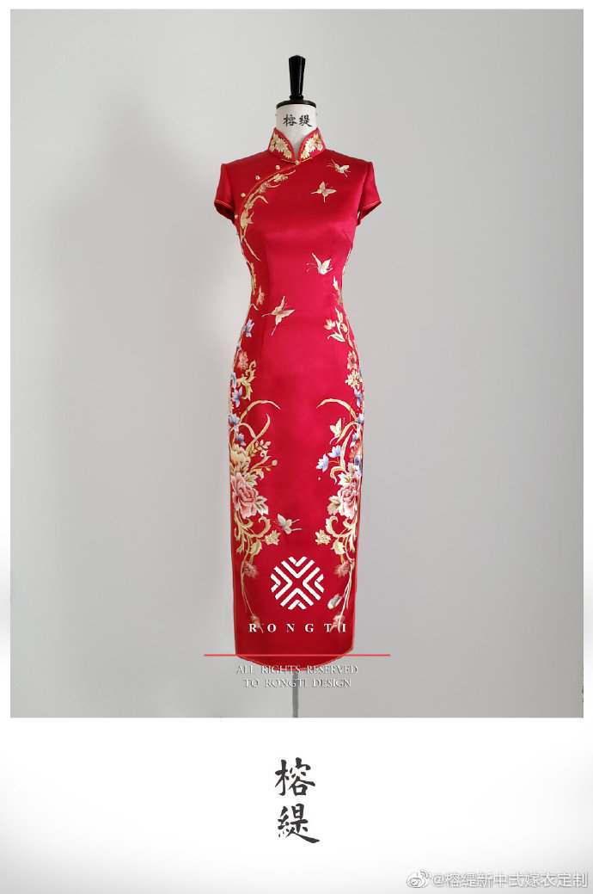

Cultura Chinesa
 Festivais
FestivaisAlguns festivais tradicionais chineses incluem:
Ano Novo Chinês
Também conhecido como Festival da Primavera, é o festival mais importante da China e marca o reencontro das famílias.
Em 2024, o Ano Novo Chinês será celebrado de 10 a 17 de fevereiro.
Festival das Lanternas
É celebrado no décimo quinto dia do primeiro mês lunar e marca o fim das celebrações do Ano Novo Chinês.
Durante o festival, as ruas são iluminadas por lanternas e as pessoas também as penduram nas suas casas e lojas para atrair boas energias para o próximo ano.
Festival da Lua
Também conhecido como Festival do Meio Outono, é celebrado no décimo quinto dia do oitavo mês lunar e marca a chegada do outono e a colheita de outubro.
A festividade inclui decorações com lanternas coloridas, música, dança e o Bolo da Lua, um símbolo tradicional da celebração.
Festival do Barco do Dragão.
O festival teve origem entre as comunidades de pescadores no sul da China. Inicialmente,
era visto como um ritual popular realizado para os deuses da chuva e para celebrar o plantio de arroz no verão.
De acordo com uma lenda difundida, o Festival Tuen Ng comemora Qu Yuan, um poeta chinês patriota.
Festival Qing Ming
História do feriado chinês dedicado à veneração dos antepassados.
O festival teve início durante a Dinastia Tang (618 – 907),
quando os cidadãos mais abastados realizavam diversas cerimônias em homenagem aos antepassados.
Esta tradição era marcada por luxo e extravagância.
Festival dos Idosos
O Festival Chongyang, também conhecido como o Dia dos Idosos na China,
tem mais de mil anos de história e é celebrado no 9º dia do 9º mês do calendário lunar.
O festival é uma forma de homenagear os idosos e a natureza, e de desejar longevidade e vitalidade.
Festival do Dragão de Primavera
O Festival da Primavera é sinónimo do Ano Novo Chinês e é a festa tradicional mais importante da China,
que marca o reencontro das famílias. Logo desde o Festival de Laba,
os chineses já começam a preparar os festejos da nova data, que em 2024 recai a 10 de fevereiro.
Festival Qi Xi. Si Liao 廖思
O Qixi é celebrado desde a Dinastia Han. Sua origem está em uma lenda chinesa sobre o romance entre a tecelã Zhinü e o pastor Niulang.
O amor dos dois era proibido e ambos foram banidos para as margens opostas de um rio.
Mas na sétima noite do sétimo mês de cada ano lunar, pássaros alinhavam suas asas e formavam uma ponte para que o casal pudesse se encontrar mais uma vez.
Uma das tradições que fazem parte do Festival Qixi diz que as meninas devem colocar uma agulha sobre a superfície da água esperando que ela flutue,
o que significa que serão boas esposas. Trabalhos manuais envolvendo bordados também são incentivados nas famílias mais conservadoras.
Outro costume é procurar no céu as estrelas Vega e Altair, separadas pela Via Láctea. Elas simbolizam a tecelã, o pastor e o rio que os separa, respectivamente.
Vestimentas
O Hanfu – “Vestes da Dinastia Han”
em tradução livre – é o estilo de vestimenta mais antigo. Tem essa denominação por ter se popularizado neste período e foi adotado por mais de 3 milênios. O Hanfu é composto por uma túnica esvoaçante com mangas soltas e uma faixa na cintura, geralmente adornada. Apesar de ter sofrido algumas modificações em outras dinastias, é considerado um símbolo da autêntica cultura chinesa.

Hanfu feminino
Hanfu Masculino
A Tangzhuang é um tipo de jaqueta masculina criada durante a Dinastia Tang (618–907), considerada uma evolução do Hanfu. Já o Cheongsam – ou Qipao – é um vestido longo feminino com botões, tradicionalmente usado na Dinastia Qing (1644-1911). Esta peça se tornou muito famosa e ainda é amplamente comercializada como roupa característica das mulheres chinesas.
Tangzhuang

Qipao